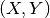
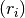
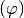
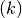
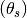
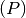
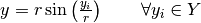
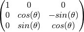
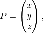
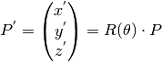

Blade¶
Module for the blade bottom-up parametrized construction.
Blade._abs_to_norm |
Private method to normalize the blade parameters. |
Blade._check_errors |
Private method to check if either the blade upper face or lower face is passed in the generate_iges method. |
Blade._check_params |
Private method to check if all the blade arguments are numpy.ndarrays with the same shape. |
Blade._check_string |
Private method to check if the parameter type is string |
Blade._compute_pitch_angle |
Private method that computes the pitch angle from the linear pitch for all blade sections. |
Blade._generate_lower_face |
Private method to generate the blade lower face. |
Blade._generate_tip |
Private method to generate the surface that closing the blade tip. |
Blade._generate_upper_face |
Private method to generate the blade upper face. |
Blade._import_occ_libs |
Private static method to import specific modules from the OCC package. |
Blade._induced_rake_from_skew |
Private method that computes the induced rake from skew for all the blade sections, according to mytransformation_operations. |
Blade._norm_to_abs |
Private method that converts the normalized blade parameters into the actual values. |
Blade._planar_to_cylindrical |
Private method that transforms the 2D planar airfoils into 3D cylindrical sections. |
Blade._write_blade_errors |
Private method to write the errors between the generated foil points in 3D space from the parametric transformations, and their projections on the generated blade faces from the OCC algorithm. |
Blade.apply_transformations |
Generate a bottom-up constructed propeller blade based on the airfoil transformations, see mytransformation_operations. |
Blade.generate_iges |
Generate and export the .iges CAD for the blade upper face, lower face, and tip. |
Blade.generate_stl |
Generate and export the .STL surface mesh for the blade as a whole, including the upper face, lower face and tip. |
Blade.export_ppg |
Export the generated blade parameters and sectional profiles into .ppg format. |
Blade.plot |
Plot the generated blade sections. |
Blade.rotate |
3D counter clockwise rotation about the X-axis of the Cartesian |
-
class
Blade(sections, radii, chord_lengths, pitch, rake, skew_angles)[source] Bases:
objectBottom-up parametrized blade construction.
Given the following parameters of a propeller blade:
-  coordinates of the blade cylindrical sections after being expanded in 2D to create airfoils.
- Radial distance  from the propeller axis of rotation to each cylindrical section.
- Pitch angle , for each cylindrical section.
- Rake , in distance units, for each cylindrical section.
- Skew angle , for each cylindrical section.
then, a bottom-up construction procedure is performed by applying series of transformation operations on the airfoils according to the provided parameters, to end up with a 3D CAD model of the blade, which can be exported into IGES format. Also surface or volume meshes can be obtained.
Useful definitions on the propeller geometry:
- Blade cylindrical section: the cross section of a blade cut by a cylinder whose centerline is the propeller axis of rotation. We may also refer as “radial section”.
- Pitch : the linear distance that a propeller would move in one revolution with no slippage. The geometric pitch angle is the angle between the pitch reference line and a line perpendicular to the propeller axis of rotation.

- Rake: the fore or aft slant of the blade with respect to a line perpendicular to the propeller axis of rotation.
- Skew: the transverse sweeping of a blade such that viewing the blades from fore or aft would show an asymmetrical shape.
References:
- Carlton, J. Marine propellers and propulsion. Butterworth-Heinemann, 2012. http://navalex.com/downloads/Michigan_Wheel_Propeller_Geometry.pdf
- J. Babicz. Wartsila Encyclopedia of Ship Technology. 2nd ed. Wartsila Corporation. 2015.
Transformation operations according to the provided parameters:

Airfoil 2D transformations corresponding to the pitch, rake, and skew of the blade expanded cylindrical section.
Parameters: - sections (array_like) – 1D array, each element is an object of the BaseProfile class at specific radial section.
- radii (array_like) – 1D array, contains the radii values of the sectional profiles.
- chord_lengths (array_like) – 1D array, contains the value of the airfoil’s chord length for each radial section of the blade.
- pitch (array_like) – 1D array, contains the local pitch values (in unit length) for each radial section of the blade.
- rake (array_like) – 1D array, contains the local rake values for each radial section of the blade.
- skew_angles (array_like) – 1D array, contains the skew angles (in degrees) for each radial section of the blade.
Note that, each of the previous array_like parameters must be consistent with the other parameters in terms of the radial ordering of the blade sections. In particular, an array_like elements must follow the radial distribution of the blade sections starting from the blade root and ends up with the blade tip since the blade surface generator depends on that order.
Finally, beware that the profiles class objects in the array ‘sections’ undergo several transformations that affect their coordinates. Therefore the array must be specific to each blade class instance. For example, if we generate 12 sectional profiles using NACA airfoils and we need to use them in two different blade classes, then we should instantiate two class objects for the profiles, as well as the blade. The following example explains the fault and the correct implementations (assuming we already have the arrays radii, chord, pitch, rake, skew):
INCORRECT IMPLEMENTATION:
>>> sections = [bladex.profiles.NacaProfile(digits='0012', n_points=240, cosine_spacing=True) for i in range(12)] >>> blade_1 = Blade( sections=sections, radii=radii, chord_lengths=chord, pitch=pitch, rake=rake, skew_angles=skew) >>> blade_1.apply_transformations() >>> blade_2 = Blade( sections=sections, radii=radii, chord_lengths=chord, pitch=pitch, rake=rake, skew_angles=skew) >>> blade_2.apply_transformations()
The previous implementation would lead into erroneous blade coordinates due to the transformed data in the array sections
CORRECT IMPLEMENTATION:
>>> sections_1 = [bladex.profiles.NacaProfile(digits='0012', n_points=240, cosine_spacing=True) for i in range(12)] >>> sections_2 = [bladex.profiles.NacaProfile(digits='0012', n_points=240, cosine_spacing=True) for i in range(12)] >>> blade_1 = Blade( sections=sections_1, radii=radii, chord_lengths=chord, pitch=pitch, rake=rake, skew_angles=skew) >>> blade_1.apply_transformations() >>> blade_2 = Blade( sections=sections_2, radii=radii, chord_lengths=chord, pitch=pitch, rake=rake, skew_angles=skew) >>> blade_2.apply_transformations()
-
_abs_to_norm(D_prop)[source] Private method to normalize the blade parameters.
Parameters: D_prop (float) – propeller diameter
-
static
_check_errors(upper_face, lower_face)[source] Private method to check if either the blade upper face or lower face is passed in the generate_iges method. Otherwise it raises an exception
Parameters:
-
_check_params()[source] Private method to check if all the blade arguments are numpy.ndarrays with the same shape.
-
static
_check_string(filename)[source] Private method to check if the parameter type is string
Parameters: filename (string) – filename of the generated .iges surface
-
_compute_pitch_angle()[source] Private method that computes the pitch angle from the linear pitch for all blade sections.
Returns: pitch angle in radians Return type: numpy.ndarray
-
_generate_lower_face(maxDeg)[source] Private method to generate the blade lower face.
Parameters: maxDeg (int) – Define the maximal U degree of generated surface
-
_generate_tip(maxDeg)[source] Private method to generate the surface that closing the blade tip.
Parameters: maxDeg (int) – Define the maximal U degree of generated surface
-
_generate_upper_face(maxDeg)[source] Private method to generate the blade upper face.
Parameters: maxDeg (int) – Define the maximal U degree of generated surface
-
static
_import_occ_libs()[source] Private static method to import specific modules from the OCC package.
-
_induced_rake_from_skew()[source] Private method that computes the induced rake from skew for all the blade sections, according to mytransformation_operations.
Returns: induced rake from skew Return type: numpy.ndarray
-
_norm_to_abs(D_prop)[source] Private method that converts the normalized blade parameters into the actual values.
Parameters: D_prop (float) – propeller diameter
-
_planar_to_cylindrical()[source] Private method that transforms the 2D planar airfoils into 3D cylindrical sections.
The cylindrical transformation is defined by the following formulas:

- 

After transformation, the method also fills the numpy.ndarray “blade_coordinates_up” and “blade_coordinates_down” with the new
 coordinates.
coordinates.
-
_write_blade_errors(upper_face, lower_face, errors)[source] Private method to write the errors between the generated foil points in 3D space from the parametric transformations, and their projections on the generated blade faces from the OCC algorithm.
Parameters: - upper_face (string) – if string is passed then the method generates the blade upper surface using the BRepOffsetAPI_ThruSections algorithm, then exports the generated CAD into .iges file holding the name <upper_face_string>.iges
- lower_face (string) – if string is passed then the method generates the blade lower surface using the BRepOffsetAPI_ThruSections algorithm, then exports the generated CAD into .iges file holding the name <lower_face_string>.iges
- errors (string) – if string is passed then the method writes out the distances between each discrete point used to construct the blade and the nearest point on the CAD that is perpendicular to that point
-
apply_transformations(reflect=True)[source] Generate a bottom-up constructed propeller blade based on the airfoil transformations, see mytransformation_operations.
The order of the transformation operations is as follows:
- Translate airfoils by reference points into origin.
- Scale X, Y coordinates by a factor of the chord length. Also reflect the airfoils if necessary.
- Rotate the airfoils counter-clockwise according to the local pitch angles. Beware of the orientation system.
- Translate airfoils along X-axis by a magnitude of the local rake. Perform another translation for the skew-induced rake.
- Translate airfoils along Y-axis by a magnitude of the skewness.
- Transform the 2D airfoils into cylindrical sections, by laying each foil on a cylinder of radius equals to the section radius, and the cylinder axis is the propeller axis of rotation.
Parameters: reflect (bool) – if true, then reflect the coordinates of all the airfoils about both X-axis and Y-axis. Default value is True. We note that the implemented transformation operations with the current Cartesian coordinate system shown in mytransformation_operations assumes a right-handed propeller. In case of a desired left-handed propeller the user can either change the code for the negative Z-coordinates in the cylindrical transformation (i.e. _planar_to_cylindrical private method), or manipulating the orientation of the generated CAD with respect to the hub.
-
export_ppg(filename='data_out.ppg', D_prop=0.25, D_hub=0.075, n_blades=5, params_normalized=False)[source] Export the generated blade parameters and sectional profiles into .ppg format.
Parameters: - filename (string) – name of the exported file. Default is ‘data/data_out.ppg’
- D_prop (float) – propeller diameter
- D_hub (float) – hub diameter
- n_blades (float) – number of blades
- params_normalized (bool) – since the standard .ppg format contains the blade parameters in the normalized form, therefore the user needs to inform whether the provided parameters (from the class Blade) are normalized or not. By default the argument is set to False, which assumes the user provides the blade parameters in their actual values, i.e. not normalized, hence a normalization operation needs to be applied so as to follow the .ppg standard format.
-
generate_iges(upper_face=None, lower_face=None, tip=None, maxDeg=1, display=False, errors=None)[source] Generate and export the .iges CAD for the blade upper face, lower face, and tip. This method requires PythonOCC to be installed.
Parameters: - upper_face (string) – if string is passed then the method generates the blade upper surface using the BRepOffsetAPI_ThruSections algorithm, then exports the generated CAD into .iges file holding the name <upper_face_string>.iges. Default value is None
- lower_face (string) – if string is passed then the method generates the blade lower surface using the BRepOffsetAPI_ThruSections algorithm, then exports the generated CAD into .iges file holding the name <lower_face_string>.iges. Default value is None
- tip (string) – if string is passed then the method generates the blade tip using the BRepOffsetAPI_ThruSections algorithm in order to close the blade, then exports the generated CAD into .iges file holding the name <tip_string>.iges. Default value is None
- maxDeg (int) – Define the maximal U degree of generated surface. Default value is 1
- display (bool) – if True, then display the generated CAD. Default value is False
- errors (string) – if string is passed then the method writes out the distances between each discrete point used to construct the blade and the nearest point on the CAD that is perpendicular to that point. Default value is None
We note that the blade object must have its radial sections be arranged in order from the blade root to the blade tip, so that generate_iges method can build the CAD surface that passes through the corresponding airfoils. Also to be able to identify and close the blade tip.
-
generate_stl(min_length=None, max_length=None, outfile_stl=None)[source] Generate and export the .STL surface mesh for the blade as a whole, including the upper face, lower face and tip. The method utilizes modules from OCC SMESH which is standalone mesh framework based on SALOME mesher project. Please refer to https://github.com/tpaviot and http://docs.salome-platform.org/7/gui/SMESH/index.html for further details.
This method requires PythonOCC and SMESH to be installed.
Parameters: - min_length (double) – smallest distance between two nodes. Default value is None
- max_length (double) – largest distance between two nodes. Default value is None
- outfile_stl (string) – if string is passed then the method exports the generated 2D surface mesh into .stl file holding the name <outfile_stl>.stl. Default value is None
We note that since the current implementation performs triangulation based on a topological compound that combines the blade 3 generated shapes without “fusion”, it may happen that the generated triangulation of the upper and lower blade faces do not share the same exact nodes on the joint edge/wire resulting from the faces intersection. The current implementation can be enough for visualization purpose. However if the generated mesh is intended for computational analysis then a manual mesh healing is recommended by the user (e.g. see “Repair > Sewing” in SALOME GUI) for a proper mesh closure.
-
plot(elev=None, azim=None, ax=None, outfile=None)[source] Plot the generated blade sections.
Parameters: - elev (int) – set the view elevation of the axes. This can be used to rotate the axes programatically. ‘elev’ stores the elevation angle in the z plane. If elev is None, then the initial value is used which was specified in the mplot3d.Axes3D constructor. Default value is None
- azim (int) – set the view azimuth angle of the axes. This can be used to rotate the axes programatically. ‘azim’ stores the azimuth angle in the x,y plane. If azim is None, then the initial value is used which was specified in the mplot3d.Axes3D constructor. Default value is None
- ax (matplotlib.axes) – allows to pass the instance of figure axes to the current plot. This is useful when the user needs to plot the coordinates of several blade objects on the same figure (see the example below). If nothing is passed then the method plots on a new figure axes. Default value is None
- outfile (string) – save the plot if a filename string is provided. Default value is None
EXAMPLE: Assume we already have the arrays radii, chord, pitch, rake, skew for 10 blade sections.
>>> sections_1 = np.asarray([blade.NacaProfile(digits='0012') for i in range(10)]) >>> blade_1 = blade.Blade(sections=sections, radii=radii, chord_lengths=chord, pitch=pitch, rake=rake, skew_angles=skew) >>> blade_1.apply_transformations()
>>> sections_2 = np.asarray([blade.NacaProfile(digits='0012') for i in range(10)]) >>> blade_2 = blade.Blade(sections=sections, radii=radii, chord_lengths=chord, pitch=pitch, rake=rake, skew_angles=skew) >>> blade_2.apply_transformations() >>> blade_2.rotate(rot_angle_deg=72)
>>> fig = plt.figure() >>> ax = fig.gca(projection=Axes3D.name) >>> blade_1.plot(ax=ax) >>> blade_2.plot(ax=ax)
On the other hand, if we need to plot for a single blade object, we can just ignore such parameter, and the method will internally create a new instance for the figure axes, i.e.
>>> sections = np.asarray([blade.NacaProfile(digits='0012') for i in range(10)]) >>> blade = blade.Blade(sections=sections, radii=radii, chord_lengths=chord, pitch=pitch, rake=rake, skew_angles=skew) >>> blade.apply_transformations() >>> blade.plot()
-
rotate(deg_angle=None, rad_angle=None)[source] 3D counter clockwise rotation about the X-axis of the Cartesian coordinate system, which is the axis of rotation of the propeller hub.
The rotation matrix,
 , is used to perform rotation
in the 3D Euclidean space about the X-axis, which is – by default –
the propeller axis of rotation. is defined by:
, is used to perform rotation
in the 3D Euclidean space about the X-axis, which is – by default –
the propeller axis of rotation. is defined by:
Given the coordinates of point
 such that
such that
Then, the rotated coordinates will be:

Parameters: Raises: ValueError – if both rad_angle and deg_angle are inserted, or if neither is inserted